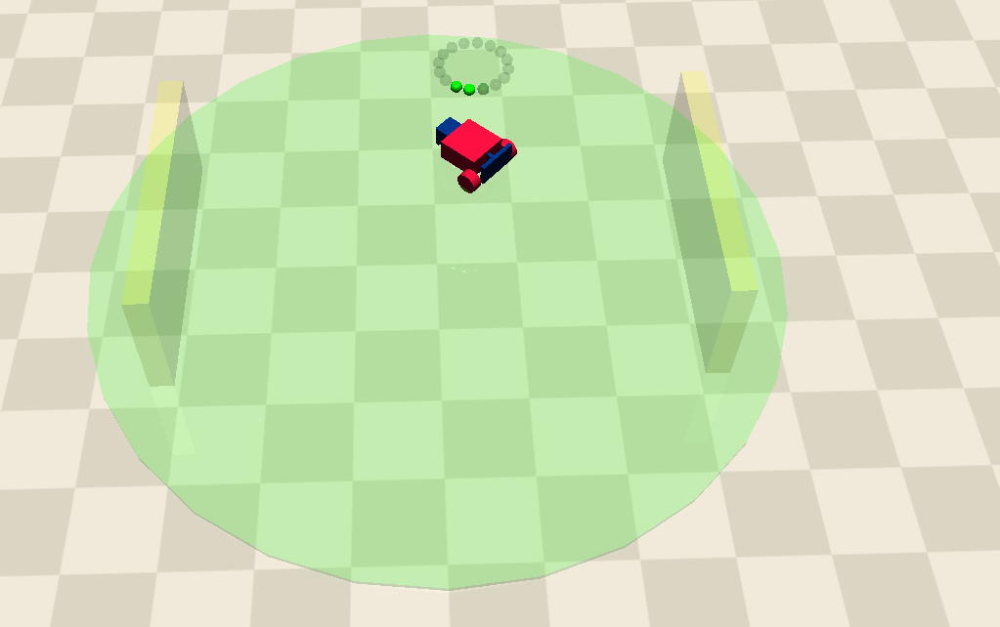
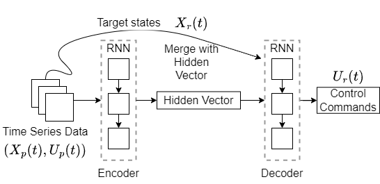
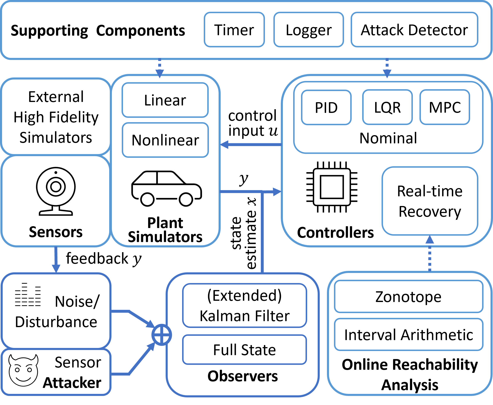

I am a PhD student in the Computer Science and Engineering Department at University of Notre Dame. My advisor is Professor Fanxin Kong , I also work closely with Insup Lee and Oleg Sokolsky , and we are currently working on recovery and security problems in Cyber-physical Systems. Before that, I received my bachelor degree from University of Toronto in 2018 and I received my master degree from Syracuse University in 2020. I worked on several projects of NLP and scientific computing problems before I joined the PhD program. My CV can be found here.
Research Interests
Cyber-physical System, Machine Learning and Security.
News
[Feb.2024] Our CHASE 2024 paper is accepted!
[Jan.2024] Our ICCPS 2024 paper is accepted!
[Dec.2023] My work of sequence-predictive control is selected for an oral presentation in 2023 COSE Research Horizons Symposium hosted by the Colleges of Science and Engineering!
[Aug.2023] Our RTSS 2023 paper is accepted!
[Aug.2023] Our Work has been accepted by ESSC 2023!
[Jul.2023] I'm moving to University of Notre Dame!
[Apr.2023] I will participate in the Twelfth Summer School on Formal Techniques and FMiTF Bootcamp!
[Apr.2023] I recieve summer pre-dissertation fellowship 2023 from Syracuse University!
[Mar.2023] I recieve SIGBED Student Travel Grants for CPS-IoT Week 2023!
[Mar.2023] Our RTAS 2023 Brief Presentation paper is accepted!
[Mar.2023] Our RTAS 2023 paper is accepted!
[Jan.2023] Our RTAS 2023 paper is conditionally accepted!
[Nov.2022] I receive the travel grant to RTSS 2022!
[Sep.2022] Our RTSS 2022 paper is accepted!
[Feb.2022] Our DAC 2022 paper is accepted!
Publications

Vulnerability Analysis for Safe Reinforcement Learning in Cyber-Physical Systems
Shixiong Jiang *, Mengyu Liu *, Fanxin Kong
ICCPS (International Conference on Cyber-Physical Systems) 2024

Learn-to-Respond: Sequence-Predictive Recovery from Sensor Attacks in Cyber-Physical Systems
Mengyu Liu, Lin Zhang, Vir phoha, Fanxin Kong
RTSS (Real-Time Systems Symposium) 2023

Demo: Simulation and Security Toolbox for Cyber-Physical Systems
Lin Zhang, Mengyu Liu, Fanxin Kong
RTAS (Real-Time and Embedded Technology and Applications Symposium) 2023